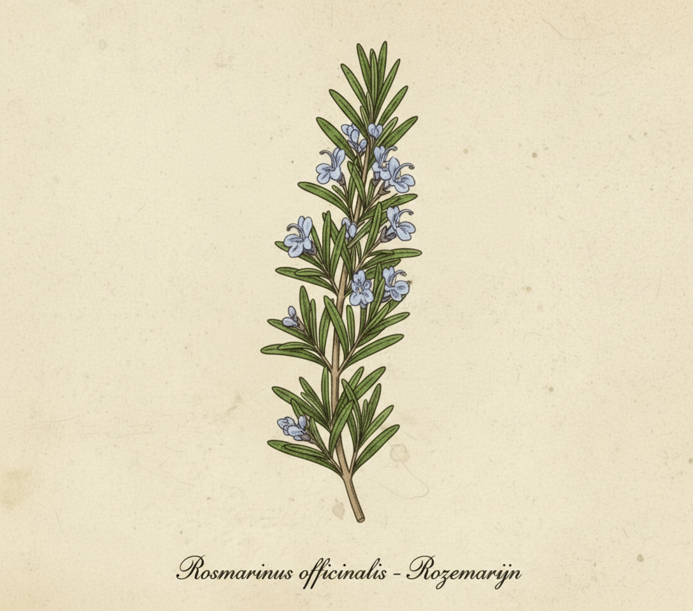
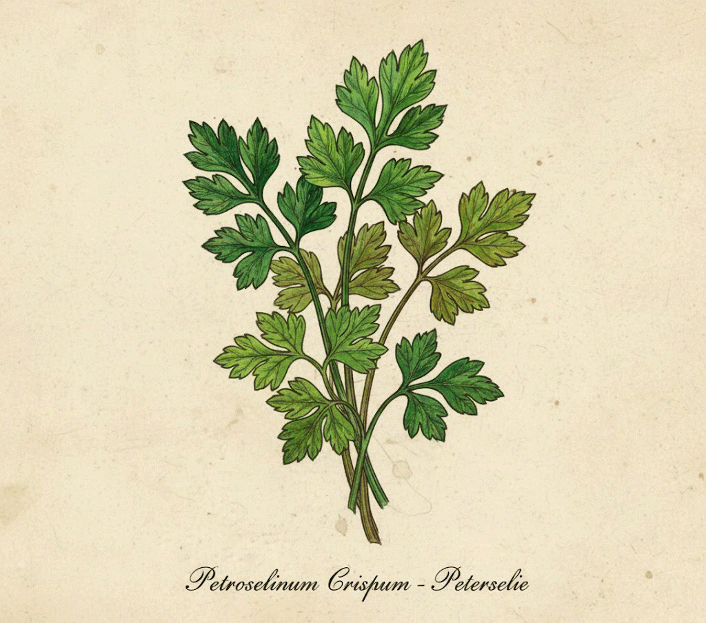
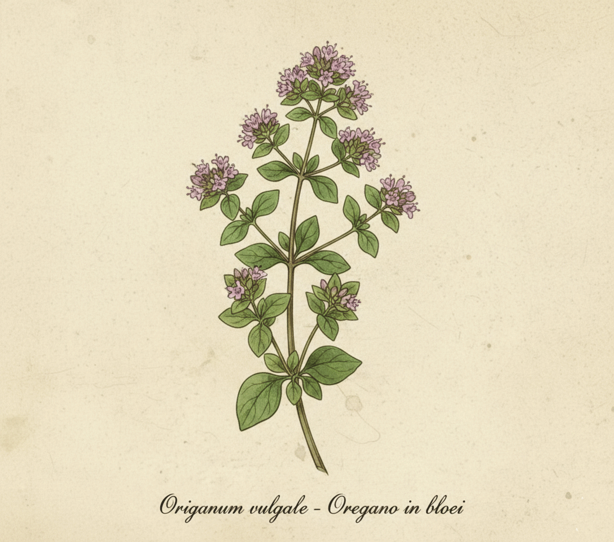
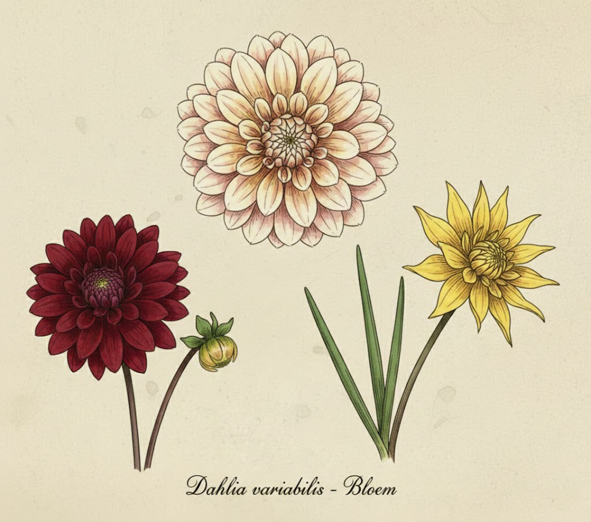
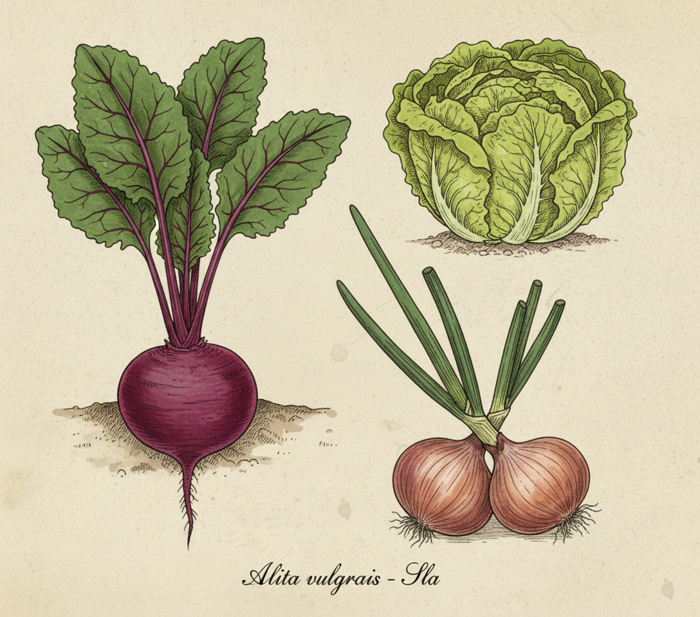
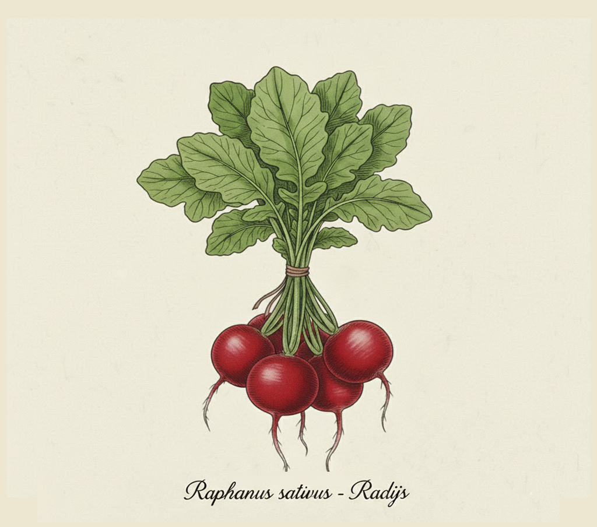

LAAT GROEIEN EN BLOEIEN
Wanneer je het bruggetje overkomt, zie je het karretje al staan. Er is altijd wel iets moois of vers te vinden. De Brink is een echt rustpunt; een plek waar je, zittend op een van de uitnodigende bankjes, uitkijkt naar de kerk en de moestuinen. Van zaadje tot plant: de stekjes die ik met liefde kweek, mogen de wereld daarna een stukje mooier en groener maken.
Kruiden, groenten en bloemen, vers uit de volle grond. Wat er op de kar staat is altijd een verrassing; het aanbod is volledig ecologisch en wisselt met de seizoenen mee. Kom gerust eens kijken op de Brink! Betalen kan met de QR-code (minimaal €5,00) die je kan scannen met je mobiel of contant.
Wil je een kop koffie met wat lekkers? Dan ben je van harte welkom bij Barista de Dominee of loop vijftig meter verderop naar Pand Pannenkoek. De opbrengst van BRINKGELUK gaat volledig naar Artsen zonder Grenzen.

Rozemarijn (dauw der zee) - Een oppepper voor lichaam en geest. Onovertroffen bij aardappels uit de oven, focaccia of een stevige winterse marinade.

Peterselie - Een heilzame vitaminebom die de nieren ondersteunt en je immuunsysteem versterkt. Geeft een frisse oppepper aan salades, sauzen of een klassieke kruidenboter

Oregano (Marjolein) - Mediterrane kracht op Hollandse bodem; verzacht bij kou en verlicht spieren. De ultieme smaakmaker voor pizza, marinade of een hartige bouillon.

Dahlia's - De Ultieme Zomer- en Najaarsbloem. Een echt 'oma-boeket' is vaak een bonte mix van verschillende soorten en kleuren als roze, dieprood, geel, oranje en wit.

Seizoensgroenten - Een bonte mix van wat de moestuin biedt. Het aanbod van groente is seizoensgebonden, onbespoten en vers van het land.

Radijsjes - Een pittige bron van vezels die de spijsvertering stimuleert en het lichaam zuivert. De perfecte knapperige bite voor op een volkorenboterham of door een frisse salade.
PAUL HEIJMINK
Schalkwijk vanuit een nieuw perspectief
Schalkwijk is van oorsprong een lintdorp langs de wetering. De karakteristieke luchtfoto’s van Paul Heijmink tonen dit vertrouwde landschap vanuit een geheel nieuw gezichtspunt. Deze unieke werken zijn beschikbaar als hoogwaardige afdruk; de volledige opbrengst van de beelden komt ten goede aan Artsen zonder Grenzen.


HET DAK
Een abstract beeld van de patronen en texturen zoals je de Michaëlkerk niet eerder hebt gezien.
BESTEL
DE KERKHAAN
Oog in oog met de kerkhaan vanuit vogelperspectief. Een nieuwe dag een nieuw begin en de haan die drie maal kraait.
BESTEL